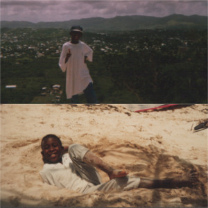
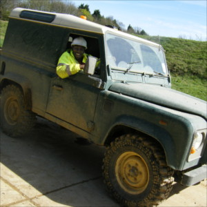
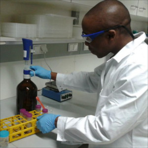

Welcome to my website, if you'd like to find out a bit about me and the projects that I'm working on you've
come to the right place.
I'm currently adding content and features to this site so check back from time to time. Thanks!
My background
I spent my formative years between the UK and the Caribbean. Much of my child hood was spent outdoors
where I developed a curiosity to better understand the natural world. This was the beginning of my interests
in the natural sciences.

I completed my BSc at the University of East Anglia in Environmental Science, spending one year working as an Environmental Coordinator
for a multinational plastics manufacturer. My main responsibilities pertained to corporate social responsibility and sustainability.
After graduation I found employment in the marketing industry. After a year I decided to quit the industry in favour of
a return to a vocation which I felt passionate about. This lead me to relocate to Spain for an internship working in
the international department of an environmental organisation to gain experience in project management. It was an opportunity
which I thoroughly enjoyed and the experience made me eager to maintain a European perspective to my future endeavours.

I took the decision to return to study in order to increase my expertise environmental pollutants and the modelling of their movement.
I worked at an Environmental Monitoring Techician and later as an Environmental Technologist whilst saving to finance my return to study.
Given my desire to continue to develop my skills in a European context I enrolled myself on a double MSc. course which promoted
international cooperation as one of the programme's core values. I specialised in Water Resources with a focus on modelling the movement
of contaminants from the soil into water bodies.

Interests and hobbies
In my free time I enjoy range of activities from photography, music production and coding to sport and long
walks on sunny afternoons. Below you'll be able to find links to my specific web pages relating to these activities.
Photography
I've held a long-standing interest in photography, recently I've begun the transitionary process of moving from
casual to enthusiast. My favourite subjects are landscapes and cityscapes. My entire work-flow
is FOSS, I use Darktable as my RAW processor and
Gimp running on a Buntu flavour of linux.
Since tinkering with one of my father's games written in
QBasic as a young boy I've had a keen interest in technology. In 2011 I finally began my journey into programming, starting
with the Python programming language. The majority of my use is centred
on the statistical and data analysis packages, such as Pandas.
I spend a lot of time listening and dancing to music! In 2009 I decided to try my hand and music production,
an experiment which blossomed into a new hobby. Due logistical issues surrounding the transport of my equipment
in recent years I've been unable to produce new music. However you can listen to my old tracks
here and watch a video from the track Nomad Is My Name
here.
I also keep a blog at Tumblr where I post thoughts on various topics with a frequency marginally high than that of Hailey's
comet passing Earth. Here's the link, happy reading!